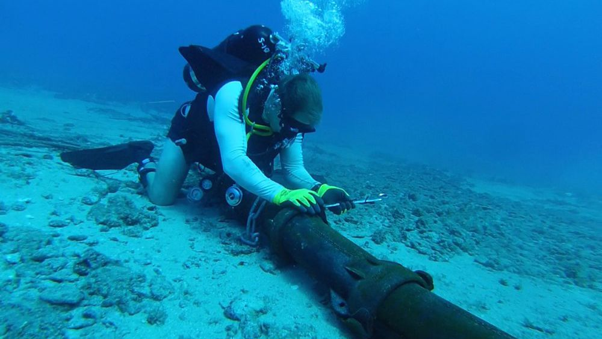

Microchips são feitos de silício
O silício é considerado o coração do mundo eletrônico, o que não é nenhum exagero. Esse material está presente em praticamente todos os dispositivos do gênero e dá nome inclusive ao local onde se concentram companhias envolvidas no desenvolvimento tecnológico, o Vale do Silício, na Califórnia, Estados Unidos.
Isolante e semicondutor
Em uma resposta rápida, podemos afirmar sem pestanejar: o silício é importante por causa da possibilidade de transformá-lo em um semicondutor. Um semicondutor pode servir tanto como condutor de energia quanto como isolante em um microchip, estando presente em basicamente todos os componentes eletrônicos da atualidade.
Sua forma pura, o silício é um isolante, contudo, após sofrer um processo chamado de dopagem eletrônica, ele se torna um semicondutor e serve perfeitamente aos propósitos da eletrônica na atualidade. A dopagem consiste em adicionar impurezas metálicas (como índio ou fósforo) a um elemento químico para dar a ele propriedades de semicondução.
Processador
O processador é o grande responsável por transformar dados em informações, como carregar páginas e fazer downloads . A velocidade na qual seu sistema executa programas, é, em parte, responsabilidade do processador. Hoje, a maioria dos nossos computadores utiliza processadores Intel®, que são classificados em diferentes linhas e gerações.
Rede de Compatadores
Rede de computadores é uma malha que interliga milhares de sistemas computacionais para a transmissão de dados. Também conhecidos como nós, esses dispositivos interconectados enviam, recebem e trocam tráfego de dados, voz e vídeo, graças ao hardware e software que compõe o ambiente.
Os melhores cursos de TI
Em relação à cursos superiores, os tecnólogos costumam ser as melhores opções para quem quer começar. Com um curso tecnólogo, é possível se formar mais rápido e ter o diploma em 1 ano e meio. Assim, dá para se planejar e conseguir uma vaga de emprego em um médio prazo.
O mercado de trabalho em Tecnologia da Informação (TI) vem se destacando nos últimos anos. Com o uso constante da internet, computadores e celulares, é natural que esse setor se torne cada vez maior e mais importante.
Cada vez o setor vem crescendo, e com ele surgem novas especializações, subsetores, opções de carreira, cargos e mais espaços para crescimento na área escolhida. Surgem, da mesma forma, novos cursos de TI.
Cabos de fibra óptica no fundo do Mar
Se você está conectado na internet neste exato momento é porque certamente inúmeras transmissões de dados aconteceram, seja pelo ar, terra ou por cabos submarinos. Somente no Brasil, há pelo menos 15 cabos tanto com alcance nacional quanto internacional, integrando países das Américas, Europa e África.
O primeiro cabo submarino que liga o Brasil e a Europa foi inaugurado no começo de junho em Portugal. O cabo de fibra ótica possui 6 mil metros de extensão, fica a 4 mil metros de profundidade no Oceano Atlântico e conecta diretamente as cidades de Fortaleza, no Brasil, e Sines, em Portugal. A novidade abre as portas para um acesso de alta qualidade, além de reduzir a latência em até 50% e aumentar a velocidade de transmissão dos dados.
Os cabos submarinos são feitos de fibra ótica e possuem isolamento especial. Como o próprio nome diz, os cabos são instalados no assoalho oceânico. São comumente utilizados em redes internacionais de telecomunicações e interligam países e continentes. No Brasil, essa tecnologia também é utilizada para fazer a conexão entre as cidades do litoral. Os cabos conseguem transmitir todo tipo de dados digitais, como mensagens de texto, áudio, imagens e vídeos, de um ponto a outro. Essa tecnologia é essencial para utilizar a internet da forma como conhecemos atualmente.
A vida útil típica de um cabo submarino é de 25 anos, embora muitos devam durar ainda mais, presumindo um nível mínimo de danos ao longo de sua vida útil.
Por isso, separamos para você as 10 maiores inovações tecnológicas de todos os tempos e as que ainda prometem nos surpreender no futuro.